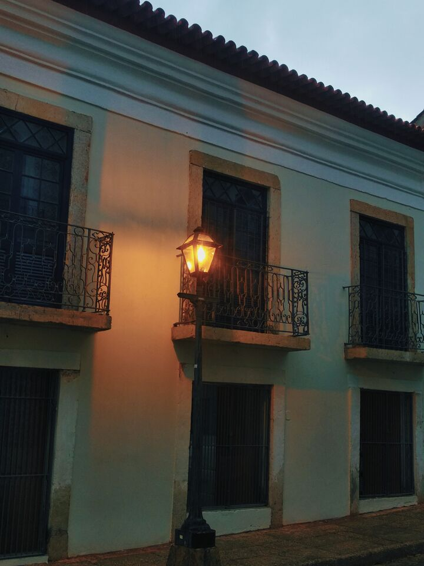
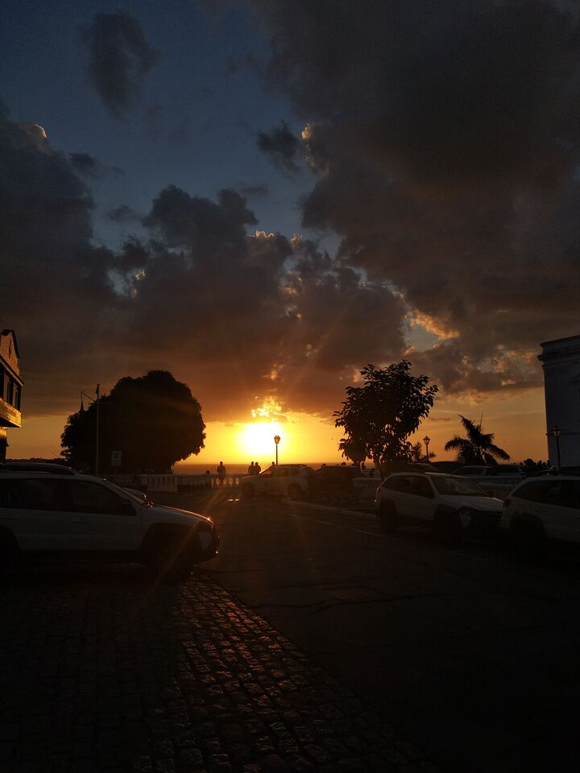
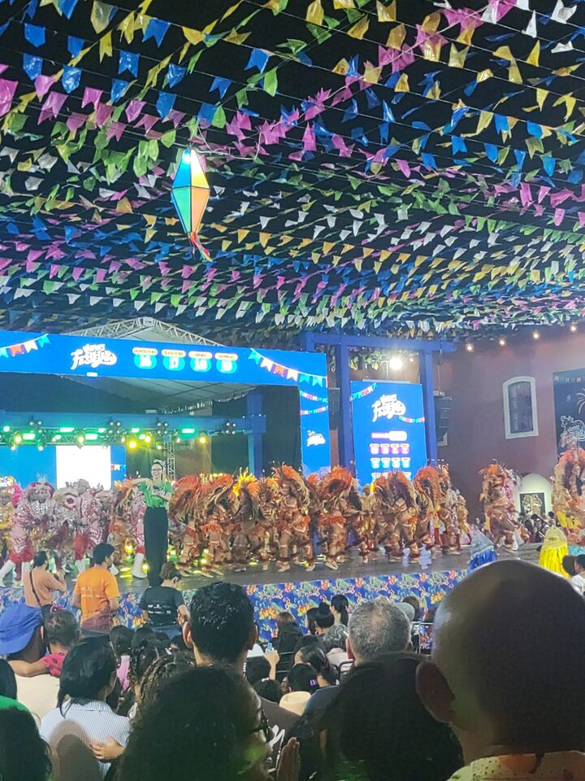
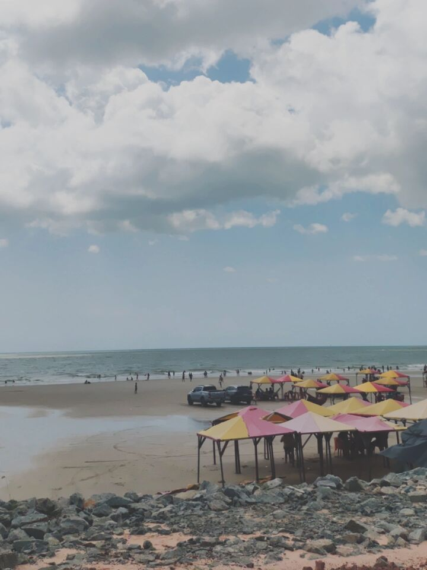
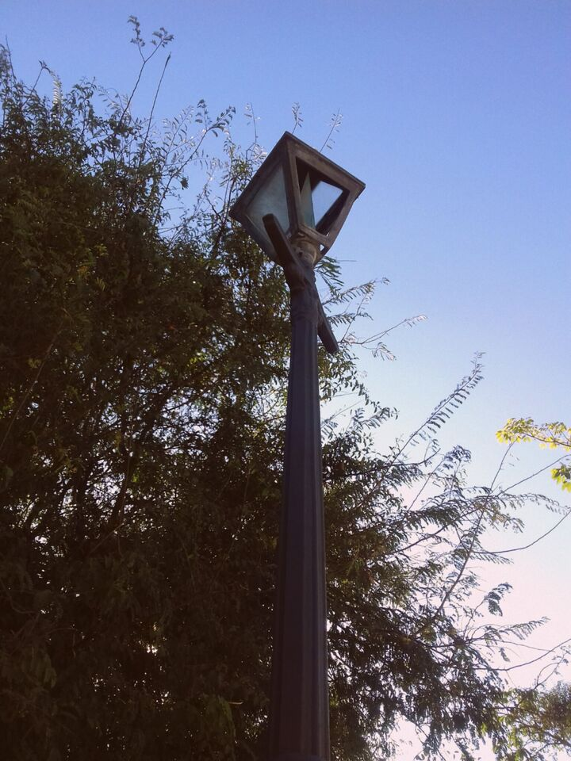
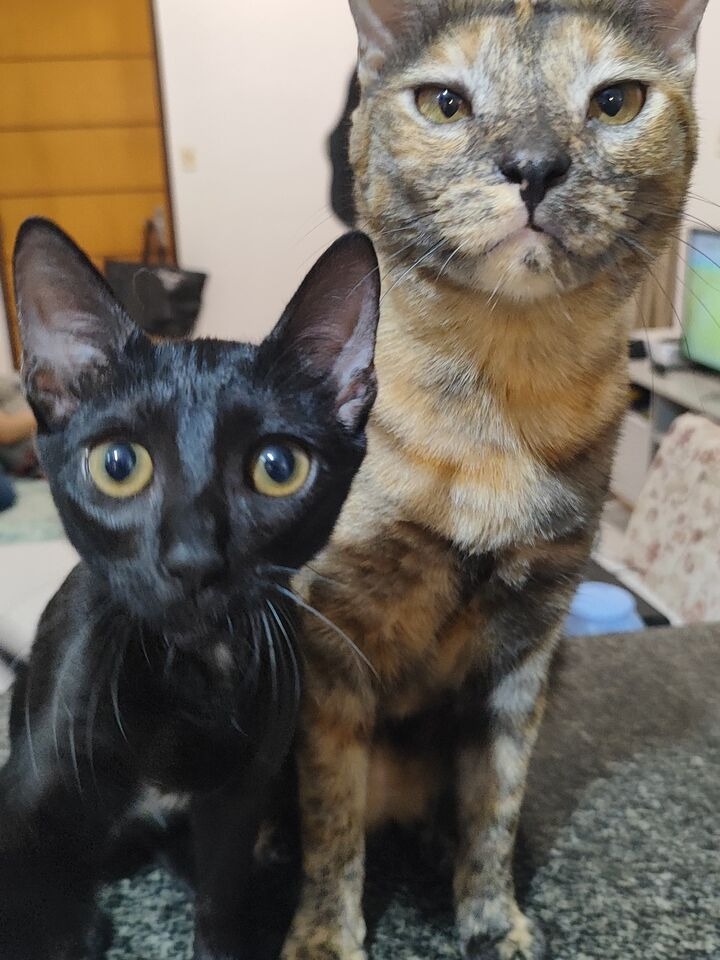

São Luís (MA)
Product Designer que transforma pesquisa e dados em produtos digitais claros.
Projetos selecionados
O que eu já fiz
Cada case conta o problema, o processo e as decisões, não só as telas finais.
Mais projetos, como Eduflex e Vital Care, no meu Behance ↗
Como eu trabalho
Primeiro eu entendo, depois eu desenho

01
Descobrir
Entrevistas, desk research e workshops com stakeholders para entender o problema real.
02
Definir
Matriz CSD, personas, mapas de empatia e jornadas para alinhar o time.
03
Desenhar
Fluxos, sitemaps e protótipos no Figma, consistentes com o design system.
04
Validar
Testes de usabilidade e avaliação heurística para melhorar continuamente.
Sobre mim
Prazer, Stefanne!


Pelas minhas lentes
São Luís (MA) e as coisas que eu amo
Fotos minhas. Detalhes, a cidade e quem me faz companhia. olhar com calma também é pesquisa.






Skills e ferramentas
Minha caixa de ferramentas
Passe o mouse em cima. elas não mordem :)
Contato
Vamos conversar?
Quer falar sobre uma vaga, um projeto ou só trocar ideia sobre pesquisa e produto? Me chama, eu respondo.
stefannecdesign@gmail.com